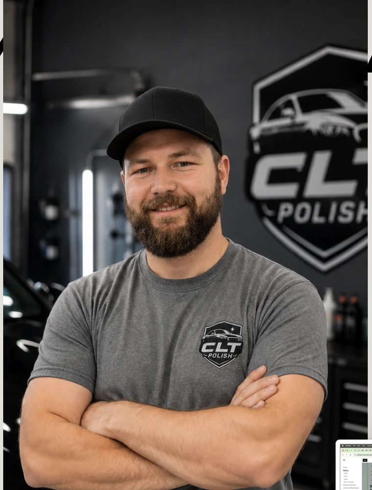

Honest scope
We explain what can likely be corrected, what may remain visible, and when a body shop is the more appropriate route.
Behind the shine
CLT Polish combines hands-on mechanical experience with obsessive attention to paint, materials, fit, and finish.

Founded by David
For David, auto care is more than making a surface look clean. Years of hands-on work as a commercial mechanic built a practical understanding of vehicle bodies, materials, hardware, and the way repairs interact with the finished appearance.
That repair-minded background shapes every CLT Polish job. Before reaching for a compound or tool, he looks at what caused the damage, how deep it is, what material is involved, and what result is realistic.
From localized scratch correction to specialty commercial polishing, the work is approached as a craft: controlled steps, frequent inspection, and clear communication with the owner.
Working principles
The strongest part of the original draft was the personal, hands-on story. These three principles make that story concrete.
We explain what can likely be corrected, what may remain visible, and when a body shop is the more appropriate route.
Work starts with inspection and a test area so the correction method fits the actual material and paint condition.
Clean tools, careful masking, and protection of surrounding trim are part of the job—not optional extras.